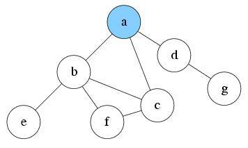
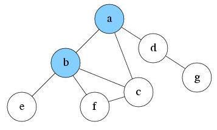
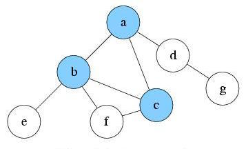
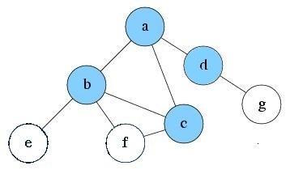
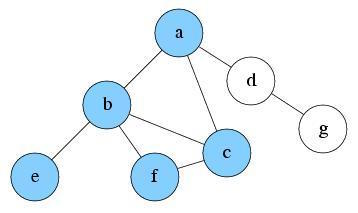
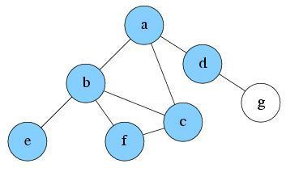
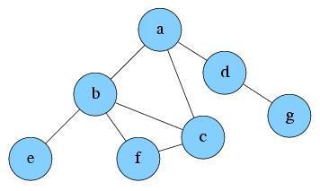

What is iterative deepening search?
Iterative deepening search (or iterative deepening depth-first search) is a general strategy, often used in combination with depth-limited search, that finds the best depth limit. It does this by gradually increasing the limit—first 0, then 1, then 2, and so on—until a goal is found. This will occur when the depth limit reaches d, the depth of the shallowest goal node.
Let’s use the DFS example again to see how IDS works:
Below is the graph we will traverse. Same as DFS, we use the stack data structure S2 to record the node we’ve explored. Suppose the source node is node a. Assume also that the ‘solution’ node is node g.

S2:
At first, the depth limit L = 0. There is only the node a reachable. So push it into S1 and mark as visited. Current level is 0.

S2: a
Explore a. Since current level is already the max depth L. No new reachable node will be found. Pop a from S2.
S2:
S2 is empty now. Since solution is not found and max depth is not reached, increment depth limit L to 1 and start the search from the beginning.
S2:
At first, only node a is reachable. So push it into S2 and mark as visited. Current level is 0.
S2: a
After exploring a, now there are three nodes reachable: b, c and d. Suppose we pick node b to explore first. Push b into S2 and mark it as visited. Current level is 1.

S2: b, a
Since current level is already the limited depth L. Node b will be treated as having no successor. So there is nothing reachable. Pop b from S2. Current level is 0.
S2: a
Explore a again. There are two unvisited nodes c and d reachable. Suppose we pick node c to explore first. Push c into S1 and mark it as visited. Current level is 1.

S2: c, a
Since the current level is already the limited depth L, node c will be treated as having no successor. So there is nothing reachable. Pop c from S2. Current level is 0.
S2: a
Explore a again. There is only one unvisited node d reachable. Push d into S2 and mark it as visited. Current level is 1.

S2: d, a
Explore d, and find no new node reachable. Pop d from S2. Current level is 0.
S2: a
Explore a again. No new reachable node anymore. Pop a from S2.
S2:
S2 is empty now. Since a solution is not found and max depth is not reached, increment depth limit L to 2 and start the search from the beginning.
The progress is very similar to previous two, and is pictured below. The steps described above generalize:
|
|
||
|---|---|---|---|
|  |  |  |
Now we can see that, at depth limit 2, IDS already explored all the nodes reachable from a, and if the solution exists in the graph, then it has been found.